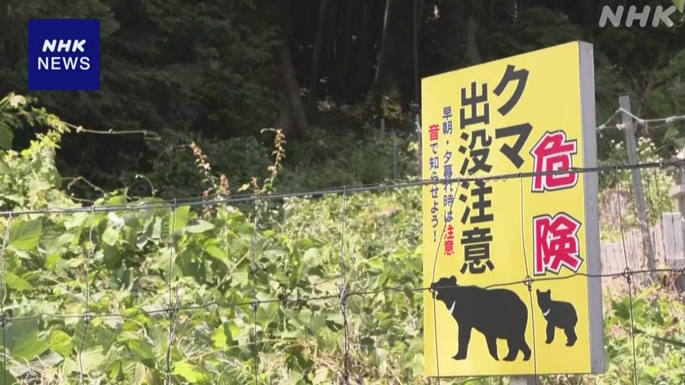
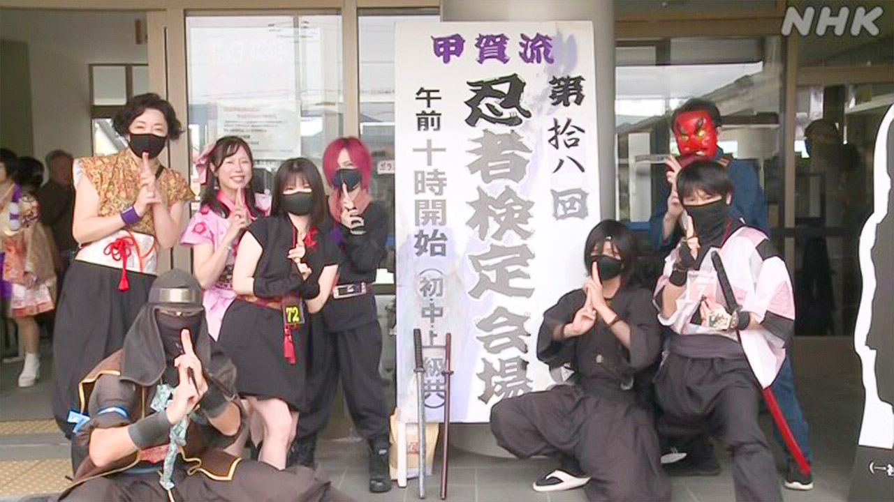

最新ニュース
1️⃣ G7「イランが核兵器を持たないようにすることを確認した」
G7サミットがフランスでありました。
日本やアメリカ、イギリス、フランスなど7つの国のリーダーなどが集まりました。
リーダーたちは17日、アメリカとイランが戦いを終わりにしようとしていることは、いいことだと言いました。そして、「イランが核兵器を持たないようにすることを確認した」と言いました。
リーダーたちは、ホルムズ海峡では、船が安全に自由に通ることが大切だと言いました。ホルムズ海峡は、原油などを運ぶ多くの船が通る海の道です。
安全のために、フランスやイギリスなどが船を守る活動を行うことが大事だと考えています。
2️⃣ 石川県と奈良県 熊が人を襲って2人がけがをした

また熊が人を襲いました。
17日午前6時ごろ、石川県小松市の山の近くで、熊が80歳ぐらいの男性を襲いました。
男性は顔などにけがをしました。男性は田んぼの近くを散歩していました。
警察によると、男性を襲った熊は見つかっていません。市などが気をつけています。
奈良県下北山村でも、17日朝早く、熊が人を襲いました。
60歳ぐらいの男性が頭や顔にけがをしました。
男性は「家の外にあるトイレの近くで襲われた」と話しています。この熊も見つかっていません。
3️⃣ 16日関東地方で震度5弱の地震 1週間ぐらい気をつけて
16日の午後8時前、関東地方で強い揺れの地震がありました。
いちばん強く揺れたのは群馬県太田市や埼玉県加須市などで、震度5弱でした。
群馬県で2人が転んでけがをしました。東北地方から近畿地方のいろいろな所で揺れました。
気象庁は「揺れが強かった所では、これから1週間ぐらいは同じぐらい強い揺れの地震があるかもしれません。気をつけてください」と話しています。
群馬県や埼玉県では、18日から雨が降りそうです。雨が降ると崖などが崩れることがあります。雨の降り方にも気をつけてください。
4️⃣ 滋賀県甲賀市 「忍者」の試験があった

滋賀県甲賀市には、昔、忍者が住んでいました。
このまちで、忍者についての試験がありました。9歳から76歳までの130人ぐらいが、集まりました。
ほとんどの人が忍者の服を着ていました。試験の点がもらえるためです。いい点をとると、合格したという紙がもらえます。
試験を受けた人たちは、忍者の歴史などの問題に答えました。
そして、忍者の武器の「手裏剣」を、3mぐらいの所から投げる試験もありました。
東京の女性は「忍者になりたいと思って来ました。手裏剣は重くて、投げるのが難しかったです」と話していました。
- 〜など
- 〜として
- 〜としている
- 〜ている / 〜でいる
- 〜こと
- 〜ように
- 〜ようにする
- 〜ため(に)
- 〜や〜など
- 〜ため
- 〜ごろ
- 〜くらい / 〜ぐらい
- 〜によると
- 〜ても / 〜でも
- 〜がある / 〜がいる
- 〜ところ
- 〜から
- 〜かもしれない / 〜かもしれません
- 〜てください / 〜でください
- 〜そうだ
- 〜ことがある
- 〜方
- 〜について
- 〜まで
- 〜から〜まで
- 〜という
- 〜になる
vebaev.github.io
Generated: 2026-06-17 11:49:43 UTC